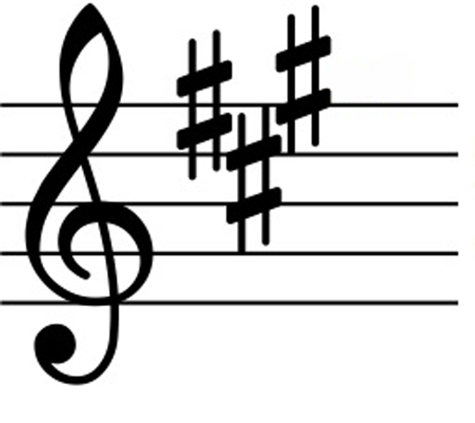

O que são Tonalidades?
Na música, uma tonalidade (ou "key" em inglês) é o centro tonal de uma peça, a nota e acorde em torno dos quais a música se organiza. Cada tonalidade tem uma escala correspondente que define quais notas soam "corretas" dentro daquele contexto. Compreender as tonalidades é essencial para navegar no mundo musical, seja ao compor, improvisar ou tocar uma peça escrita.
Entendendo as Tonalidades Maiores e Menores
Cada tonalidade pode ser classificada como maior ou menor. As tonalidades maiores geralmente soam mais brilhantes e alegres, enquanto as tonalidades menores têm um tom mais escuro ou melancólico. A diferença entre elas está nas distâncias (intervalos) entre as notas da escala.
- Tonalidade Maior: A tonalidade maior é baseada na escala maior, onde a sequência de tons e semitons é: Tom, Tom, Semitom, Tom, Tom, Tom, Semitom.
- Tonalidade Menor: A tonalidade menor é baseada na escala menor natural, cuja sequência é: Tom, Semitom, Tom, Tom, Semitom, Tom, Tom.
Tonalidade e Armadura de Clave
Para identificar a tonalidade de uma música escrita, é preciso observar a armadura de clave. A armadura de clave é composta por sustenidos (#) ou bemóis (b) que aparecem no início da pauta, após a clave. A quantidade e posição desses sinais indicam a tonalidade da peça.
Por exemplo, se a armadura de clave tiver um sustenido (Fá#), a tonalidade é Sol maior (ou Mi menor, sua relativa menor). Se houver três bemóis (Si♭, Mi♭, Lá♭), a tonalidade é Mi♭ maior (ou Dó menor, sua relativa menor).
|  |
|---|
Relativas Maiores e Menores
Cada tonalidade maior tem uma relativa menor associada, que compartilha a mesma armadura de clave. A única diferença entre elas é a nota inicial da escala e o contexto harmônico. Para encontrar a relativa menor de uma tonalidade maior, basta descer três semitons.
Por exemplo:
- Dó maior: A relativa menor é Lá menor.
- Sol maior: A relativa menor é Mi menor.
- Ré maior: A relativa menor é Si menor.
Ciclo de Quintas
O ciclo de quintas é uma ferramenta prática para entender as relações entre diferentes tonalidades. Ele mostra como as tonalidades maiores e menores estão conectadas por intervalos de quintas justas e como as armaduras de clave mudam conforme você se move ao longo do ciclo.
Ao mover-se no sentido horário pelo ciclo de quintas, cada nova tonalidade adiciona um sustenido na armadura de clave. No sentido anti-horário, cada nova tonalidade adiciona um bemol.
 |
|---|
Modulação entre Tonalidades
A modulação ocorre quando uma música muda de uma tonalidade para outra durante a execução. Isso pode adicionar variedade e interesse à composição. Existem vários tipos de modulação, como:
- Modulação Diatônica: A música muda para uma tonalidade próxima no ciclo de quintas, como de Dó maior para Sol maior.
- Modulação Cromática: A tonalidade muda para uma mais distante, introduzindo notas fora da escala original.
As modulações criam diferentes sentimentos e emoções ao longo da música e são amplamente usadas em composições mais complexas.
Praticando Tonalidades
Uma ótima maneira de praticar tonalidades é tocar escalas em diferentes tonalidades e praticar progressões de acordes dentro de cada uma delas. Isso ajudará a fortalecer sua compreensão das características e sons exclusivos de cada tonalidade.
Além disso, experimente tocar músicas em tonalidades diferentes para aumentar a familiaridade com diferentes armaduras de clave e padrões musicais.